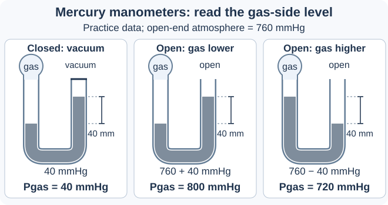
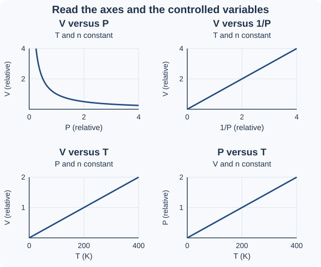
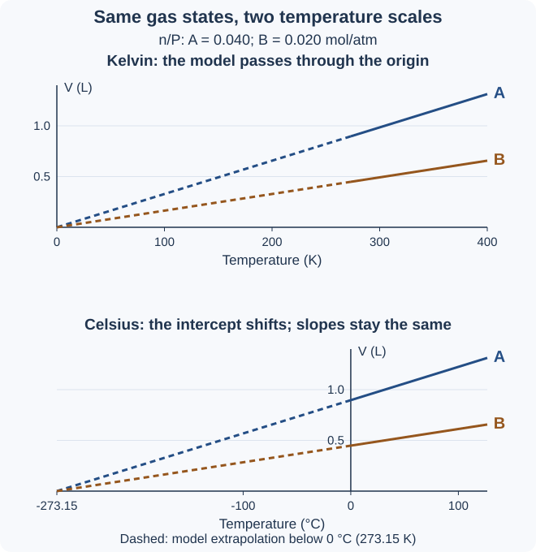

เริ่มจากหน่วยและสิ่งที่คงที่ อ่านสรุปทีละช่วง แล้วลองตอบก่อนเปิดเฉลย การอ่านกราฟต้องดูทั้งป้ายแกน หน่วย และเงื่อนไข
1. รู้จักตัวแปรและหน่วยก่อนใช้สูตร
P คือความดันแก๊ส โดยสูตรใช้ความดันสัมบูรณ์ที่วัดเทียบกับสุญญากาศ; V คือปริมาตรส่วนที่แก๊สอยู่; T คืออุณหภูมิหน่วยเคลวิน (K); n คือจำนวนโมลของแก๊ส หน่วย mol เลขห้อย 1 และ 2 หมายถึงสภาวะก่อนและหลัง ต้องรู้ว่าตัวใดเปลี่ยนและตัวใดคงที่ก่อนเลือกสูตร
อุณหภูมิในกฎแก๊สต้องเป็นเคลวิน: เคลวิน = องศาเซลเซียส + 273.15 บางโจทย์กำหนดให้ใช้ 273 เพื่อคำนวณง่าย ให้ทำตามที่โจทย์ระบุ การเพิ่มจาก 20 เป็น 40 °C ไม่ใช่อุณหภูมิเคลวินเพิ่มเป็นสองเท่า ความสัมพันธ์ในบทนี้ใช้แบบจำลองแก๊สอุดมคติ และต้องตรวจว่ามีแก๊สรั่วหรือเปลี่ยนสถานะหรือไม่
| สิ่งที่ต้องตรวจ | หน่วยและตัวอย่าง |
|---|---|
| ปริมาตร | 1 L = 1000 mL = 1000 cm3 ใช้หน่วยเดียวกันเมื่อเทียบสองสภาวะ |
| ความดัน | 1 atm = 101.325 kPa = 760 torr ≈ 760 mmHg และ 1 kPa = 1000 Pa |
| อุณหภูมิ | 27 °C = 300 K เมื่อกำหนดให้บวก 273; เขียน K โดยไม่ใส่เครื่องหมายองศา |
คำถาม 1 — แปลงหน่วยและระบุสิ่งที่คงที่
ก. ระบุความหมายของ P, V, T และ n พร้อมบอกว่าเลขห้อย 1 และ 2 ใช้ทำอะไร
ข. แปลง 500 mL เป็น L, 1520 torr เป็น atm และ 27 °C เป็น K โดยข้อนี้ให้บวก 273
ค. เมื่อมีคนบอกว่า “เพิ่มจาก 20 เป็น 40 °C แสดงว่าอุณหภูมิเพิ่มเป็นสองเท่า” จงตรวจด้วยเคลวิน โดยให้บวก 273
ก. P คือความดัน, V คือปริมาตร, T คืออุณหภูมิเคลวิน และ n คือจำนวนโมล เลขห้อย 1 และ 2 ใช้แยกค่าก่อนและหลัง ไม่ใช่ยกกำลัง
ข. 500 ÷ 1000 = 0.500 L; 1520 ÷ 760 = 2.00 atm; 27 + 273 = 300 K
ค. ได้ 293 K และ 313 K ซึ่ง 313 ไม่ใช่ 2 × 293 จึงไม่ใช่สองเท่า ต้องใช้เคลวินในการเทียบสัดส่วนอุณหภูมิ
2. ความดันและการอ่านระดับปรอท
ความดัน คือแรงตั้งฉากต่อหนึ่งหน่วยพื้นที่ แก๊สทำให้เกิดความดันเมื่ออนุภาคชนผนัง บารอมิเตอร์ วัดความดันบรรยากาศ ส่วน มาโนมิเตอร์ วัดความดันแก๊สโดยเทียบกับอีกด้าน ด้านที่ความดันมากกว่าจะกดของเหลวให้ต่ำกว่า เมื่อของเหลวอยู่นิ่ง ความดันที่ระดับแนวนอนเดียวกันในของเหลวชนิดเดียวกันเท่ากัน ค่าความดันบรรยากาศจริงให้ใช้ตามโจทย์ ไม่สมมติว่าเท่ากับ 1 atm เสมอ
กรณีใช้ปรอท (Hg): ความต่างระดับ 40 mm ของปรอทเทียบได้กับความดันต่าง 40 mmHg ตามแบบจำลองการอ่านนี้ ถ้าปลายปิดเป็นสุญญากาศ ความดันแก๊สเท่ากับความดันของส่วนต่างระดับ; ถ้าปลายเปิดสู่บรรยากาศ ให้บวกส่วนต่างเมื่อแก๊สดันปรอทฝั่งตนต่ำกว่า และลบเมื่อฝั่งแก๊สสูงกว่า ต้องดูทั้งชนิดของเหลวและหน่วยความสูง
| ตัวอย่างต่างระดับ 40 mm ของปรอท | ความดันแก๊ส |
|---|---|
| ปลายปิดเป็นสุญญากาศ | 40 mmHg |
| ปลายเปิด บรรยากาศ 760 mmHg; ฝั่งแก๊สต่ำกว่า | 760 + 40 = 800 mmHg |
| ปลายเปิด บรรยากาศ 760 mmHg; ฝั่งแก๊สสูงกว่า | 760 − 40 = 720 mmHg |

คำถาม 2 — ดูระดับก่อนเลือกบวกหรือลบ
ก. บารอมิเตอร์กับมาโนมิเตอร์ใช้วัดอะไรต่างกัน และทำไมฝั่งที่ความดันมากกว่าจึงมีระดับปรอทต่ำกว่า?
ข. มาโนมิเตอร์ปลายเปิดใช้ปรอท บรรยากาศ 760 mmHg ฝั่งแก๊สต่ำกว่าอีกฝั่ง 25 mm จงหาความดันแก๊ส
ค. มาโนมิเตอร์ปลายปิดที่อีกด้านเป็นสุญญากาศใช้ปรอท ต่างระดับ 32.0 cm จงหาความดันแก๊สเป็น mmHg และประมาณเป็น atm โดยใช้ 760 mmHg ต่อ 1 atm
ก. บารอมิเตอร์วัดความดันบรรยากาศ มาโนมิเตอร์วัดความดันแก๊สเทียบกับอีกด้าน ฝั่งที่กดแรงต่อพื้นที่มากกว่าจะดันปรอทลงจนความดันที่ระดับแนวนอนเดียวกันในปรอทสมดุลกัน
ข. ฝั่งแก๊สต่ำกว่าแสดงว่าแก๊สมีความดันมากกว่าบรรยากาศ จึงได้ 760 + 25 = 785 mmHg
ค. 32.0 cm = 320 mm จึงได้ 320 mmHg และ 320 ÷ 760 ≈ 0.421 atm ไม่ต้องบวกบรรยากาศ เพราะอีกด้านเป็นสุญญากาศ
3. กฎของบอยล์: กดให้ความดันเพิ่ม ปริมาตรลด
เมื่อ T และ n คงที่ ปริมาตรแปรผกผันกับความดัน หมายถึงถ้าความดันเพิ่มเป็นสองเท่า ปริมาตรจะเหลือครึ่งหนึ่ง ผลคูณ P × V คงที่ จึงใช้ P1V1 = P2V2 ต้องรอให้อุณหภูมิเป็นไปตามเงื่อนไข ไม่ถือว่าการกดแก๊สเร็ว ๆ ทำให้อุณหภูมิคงที่เสมอ
ตัวอย่าง: แก๊ส 6.00 L ที่ 1.00 atm ถูกอัดเป็น 3.00 atm โดยอุณหภูมิและจำนวนโมลเดิม จะมีปริมาตร 1.00 × 6.00 ÷ 3.00 = 2.00 L กราฟ V กับ P เป็นเส้นโค้งลดลง ส่วนกราฟ V กับ 1/P เป็นเส้นตรงผ่านจุดกำเนิดตามแบบจำลอง
| เปลี่ยนความดันที่ T และ n เดิม | ผลต่อปริมาตร |
|---|---|
| เพิ่มเป็น 2 เท่า | เหลือ 1/2 ของเดิม |
| ลดเหลือ 1/3 | เพิ่มเป็น 3 เท่า |
คำถาม 3 — ใช้ความสัมพันธ์แบบผกผัน
ก. แก๊ส 0.500 L ที่ 1.20 atm ถูกอัดเหลือ 0.200 L โดย T และ n คงที่ จงหาความดันสุดท้าย
ข. ที่ T และ n คงที่ กราฟ V กับ P และกราฟ V กับ 1/P มีรูปร่างอย่างไร?
ค. ถ้าระหว่างอัดมีแก๊สรั่วออก หรืออุณหภูมิยังสูงขึ้น จะใช้กฎบอยล์โดยไม่ตรวจเงื่อนไขได้หรือไม่?
ก. P2 = 1.20 × 0.500 ÷ 0.200 = 3.00 atm ปริมาตรลดลงจึงคาดว่าความดันเพิ่มขึ้น สอดคล้องกับคำตอบ
ข. V กับ P เป็นเส้นโค้งลดลง ส่วน V กับ 1/P เป็นเส้นตรงผ่านจุดกำเนิด เพราะ V แปรผันตรงกับส่วนกลับของ P
ค. ไม่ได้ แก๊สรั่วทำให้ n เปลี่ยน ส่วนการร้อนขึ้นทำให้ T เปลี่ยน ต้องใช้ความสัมพันธ์ที่รวมตัวแปรที่เปลี่ยน หรือรอจนได้เงื่อนไขที่ต้องการ
4. กฎของชาร์ล: อุ่นแล้วขยายเมื่อความดันคงที่
เมื่อ P และ n คงที่ ปริมาตรแปรผันตรงกับอุณหภูมิเคลวิน จึงมี V/T คงที่ และใช้ V1/T1 = V2/T2 ถ้าเคลวินเพิ่มเป็นสองเท่า ปริมาตรเพิ่มเป็นสองเท่าตามแบบจำลอง ต้องให้แก๊สขยายหรือหดได้เพื่อรักษาความดัน
ตัวอย่าง: แก๊ส 2.00 L ที่ 300 K ถูกอุ่นเป็น 450 K โดยความดันและจำนวนโมลเดิม ปริมาตรใหม่ = 2.00 × 450 ÷ 300 = 3.00 L กราฟ V กับ T หน่วย K เป็นเส้นตรงผ่านจุดกำเนิดตามแบบจำลอง การอุ่นแก๊สในภาชนะแข็งปิดสนิทไม่ได้มีเงื่อนไขเหมือนกรณีนี้ เพราะปริมาตรถูกบังคับให้คงที่
| สิ่งที่ต้องทำ | เหตุผล |
|---|---|
| แปลง °C เป็น K ก่อนเทียบ | อัตราส่วน V เท่ากับอัตราส่วนอุณหภูมิเคลวิน ไม่ใช่องศาเซลเซียส |
| ตรวจว่าความดันและจำนวนโมลเดิม | การเพิ่มอุณหภูมิอย่างเดียวไม่ได้รับรองว่าจะใช้กฎชาร์ลได้ |
คำถาม 4 — แปลงเคลวินก่อนหาสัดส่วน
ก. แก๊ส 3.00 L ที่ 27 °C ถูกอุ่นเป็น 127 °C โดย P และ n คงที่ ให้บวก 273 จงหาปริมาตรใหม่
ข. อุ่นจาก 20 เป็น 40 °C ที่ P และ n เดิม ปริมาตรเพิ่มเป็นสองเท่าหรือไม่? ให้บวก 273 แล้วเทียบอัตราส่วน
ค. อุ่นแก๊สในถังแข็งปิดสนิทที่ปริมาตรคงเดิม ควรใช้กฎชาร์ลเพื่อบอกว่าปริมาตรเพิ่มหรือไม่?
ก. T1 = 300 K และ T2 = 400 K; V2 = 3.00 × 400 ÷ 300 = 4.00 L
ข. ไม่ใช่สองเท่า อุณหภูมิเปลี่ยนจาก 293 เป็น 313 K ดังนั้นปริมาตรใหม่ต่อเดิม = 313/293 ≈ 1.068 หรือเพิ่มประมาณ 6.8%
ค. ไม่ควร เพราะถังแข็งบังคับ V ให้คงเดิม จึงไม่ตรงเงื่อนไขการขยายที่ P คงที่ ต้องพิจารณาว่าความดันเปลี่ยนอย่างไรแทน
5. กฎของเกย์–ลูสแซก: อุ่นในถังแข็งแล้วความดันเพิ่ม
เมื่อ V และ n คงที่ ความดันแปรผันตรงกับอุณหภูมิเคลวิน จึงมี P/T คงที่ และใช้ P1/T1 = P2/T2 อุ่นแก๊สในถังแข็งที่ไม่รั่วและไม่เปลี่ยนจำนวนโมล จะทำให้ความดันเพิ่มขึ้น
ตัวอย่าง: ความดันเริ่ม 1.00 atm ที่ 300 K เมื่ออุ่นเป็น 450 K ที่ปริมาตรและจำนวนโมลเดิม จะได้ความดัน 1.00 × 450 ÷ 300 = 1.50 atm กราฟ P กับ T หน่วย K เป็นเส้นตรงผ่านจุดกำเนิดตามแบบจำลอง ต้องใช้ความดันสัมบูรณ์ ไม่แทนค่าความดันเกจที่วัดเทียบกับบรรยากาศโดยตรง
| สิ่งที่คงที่ต่างกัน | ผลเมื่ออุ่น |
|---|---|
| P และ n คงที่: กฎชาร์ล | V เพิ่ม |
| V และ n คงที่: กฎเกย์–ลูสแซก | P เพิ่ม |
คำถาม 5 — ดูว่าถังคงปริมาตรหรือคงความดัน
ก. แก๊สในถังแข็งไม่รั่วมีความดัน 0.900 atm ที่ 300 K เมื่อเพิ่มเป็น 500 K โดย n เดิม ความดันเป็นเท่าไร?
ข. ที่ V และ n คงที่ ถ้าความดันสัมบูรณ์เพิ่มเป็นสองเท่า อุณหภูมิเคลวินและองศาเซลเซียสต้องเพิ่มเป็นสองเท่าทั้งคู่หรือไม่?
ค. เกจแสดงความดันสูงกว่าบรรยากาศ 0.50 atm ถ้าบรรยากาศเป็น 1.00 atm ค่าความดันสัมบูรณ์ที่ใช้ในสูตรคือเท่าไร?
ก. P2 = 0.900 × 500 ÷ 300 = 1.50 atm
ข. อุณหภูมิเคลวินเพิ่มเป็นสองเท่าตามแบบจำลอง แต่ค่าองศาเซลเซียสไม่จำเป็นต้องสองเท่า เพราะจุดศูนย์ต่างกัน
ค. ความดันสัมบูรณ์ = ความดันเกจ + บรรยากาศ = 0.50 + 1.00 = 1.50 atm ไม่ใช้ 0.50 atm โดยตรง
6. กฎของอาโวกาโดร: เพิ่มโมลแล้วปริมาตรเพิ่ม
เมื่อ P และ T คงที่ ปริมาตรแปรผันตรงกับจำนวนโมล จึงมี V/n คงที่ และใช้ V1/n1 = V2/n2 แก๊สอุดมคติต่างชนิดที่มีปริมาตรเท่ากัน ณ ความดันและอุณหภูมิเดียวกัน มีจำนวนโมลเท่ากัน แต่มวลอาจต่างกัน
ตัวอย่าง: แก๊ส 0.200 mol มีปริมาตร 6.00 L เมื่อเพิ่มจนเป็น 0.300 mol โดยคงความดันและอุณหภูมิ ปริมาตรใหม่ = 6.00 × 0.300 ÷ 0.200 = 9.00 L กราฟ V กับ n เป็นเส้นตรงผ่านจุดกำเนิดตามแบบจำลอง ต้องนับโมลแก๊สที่มีอยู่จริงหลังการเติม รั่ว หรือเกิดปฏิกิริยา
| ข้อมูลที่ให้ | ใช้เทียบโมลได้หรือไม่ |
|---|---|
| ปริมาตรเท่ากัน และ P, T เท่ากัน | ได้: n เท่ากันตามแบบจำลอง |
| มวลแก๊สต่างชนิดเท่ากันอย่างเดียว | ยังไม่ได้: ใช้ n = มวล (g) ÷ มวลต่อโมล (g/mol) ของแต่ละสาร แล้วจึงเทียบโมล |
คำถาม 6 — แยกจำนวนโมลออกจากมวล
ก. แก๊ส 0.100 mol มีปริมาตร 4.00 L เติมอีก 0.0500 mol โดยคง P และ T จงหาปริมาตรใหม่
ข. แก๊สสองชนิดมี V, P และ T เท่ากัน จะมีจำนวนโมลเท่ากันหรือไม่ และจำเป็นต้องมีมวลเท่ากันหรือไม่?
ค. ถ้าเติมแก๊สลงในถังแข็งโดยคงอุณหภูมิ จะใช้กฎอาโวกาโดรสรุปว่าปริมาตรต้องเพิ่มได้หรือไม่?
ก. n สุดท้าย = 0.100 + 0.0500 = 0.150 mol; V2 = 4.00 × 0.150 ÷ 0.100 = 6.00 L ไม่ใช้เฉพาะโมลที่เติมเป็นโมลสุดท้าย
ข. มีจำนวนโมลเท่ากันตามแบบจำลอง แต่มวลไม่จำเป็นต้องเท่ากัน เพราะมวลต่อโมลอาจต่างกัน
ค. ไม่ได้ ถังแข็งบังคับ V ให้คงเดิม จึงไม่ใช่เงื่อนไข P คงที่ ความดันอาจเพิ่มแทน ไม่เลือกสูตรจากคำว่า “เติมแก๊ส” อย่างเดียว
7. กฎรวมแก๊ส: หลายตัวแปรเปลี่ยนพร้อมกัน
เมื่อ n คงที่ แต่ P, V และ T เปลี่ยน ให้ใช้ (P1 × V1)/T1 = (P2 × V2)/T2 โดย T เป็นเคลวิน ใช้หน่วย P ตรงกันทั้งสองฝั่ง และหน่วย V ตรงกัน แยกค่าก่อน–หลังให้ครบ แล้วตรวจทิศทางว่าความดันและอุณหภูมิดึงปริมาตรไปทางเดียวกันหรือตรงข้ามกัน
ตัวอย่าง: แก๊ส 2.00 L ที่ 1.00 atm และ 300 K เปลี่ยนเป็น 2.00 atm และ 450 K โดย n เดิม จะได้ปริมาตรใหม่ = 2.00 × (1.00/2.00) × (450/300) = 1.50 L ถ้า n เปลี่ยนด้วย ต้องรวมจำนวนโมล: (P1 × V1)/(n1 × T1) = (P2 × V2)/(n2 × T2) สำหรับแบบจำลองแก๊สอุดมคติ
| ขั้นเลือกสูตร | ตรวจอะไร |
|---|---|
| 1. ตรวจโมลของแก๊ส | ภาชนะปิดอย่างเดียวไม่พอ ถ้ามีปฏิกิริยาหรือการควบแน่น จำนวนโมลแก๊สอาจเปลี่ยน |
| 2. แยกสภาวะและแปลงหน่วย | อย่าสลับค่าก่อน–หลัง และอย่าใช้องศาเซลเซียสในอัตราส่วน |
คำถาม 7 — รวมผลของความดัน อุณหภูมิ และโมล
ก. แก๊ส 3.00 L ที่ 1.00 atm และ 300 K เปลี่ยนเป็น 1.50 atm และ 450 K โดย n คงที่ จงหาปริมาตรใหม่
ข. ทำไมแก๊สในภาชนะปิดที่มีบางส่วนควบแน่นเป็นของเหลว จึงไม่รับรองว่าจะใช้กฎรวมแบบ n คงที่ได้?
ค. แก๊สเริ่ม 0.200 mol ปริมาตร 4.00 L หลังรั่วเหลือ 0.100 mol แล้วปรับให้ P และ T เท่ากับก่อนรั่ว จงหาปริมาตรใหม่ตามแบบจำลอง
ก. V2 = 3.00 × (1.00/1.50) × (450/300) = 3.00 L ผลของการเพิ่มความดันกับการเพิ่มอุณหภูมิหักล้างกันพอดีในตัวอย่างนี้
ข. จำนวนโมลรวมของสารในภาชนะอาจเดิม แต่จำนวนโมลที่ยังเป็นแก๊สลดลง ต้องใช้ n ของส่วนแก๊ส ไม่รวมโมลที่เป็นของเหลวใน n ของสูตรแก๊ส
ค. P และ T ก่อน–หลังเท่ากัน จึงใช้ V2 = 4.00 × (0.100/0.200) = 2.00 L ไม่ถือว่า n เดิมเพียงเพราะเป็นแก๊สชนิดเดิม
8. อ่านแกนและเงื่อนไขของกราฟ
ดูว่าแกนตั้ง–แกนนอนเป็นอะไร ก่อนบอกรูปร่าง: เมื่อ T และ n คงที่ กราฟ V กับ P เป็นเส้นโค้งผกผัน แต่ V กับ 1/P เป็นเส้นตรง ส่วนกราฟ V กับ T, P กับ T และ V กับ n เป็นเส้นตรงผ่านจุดกำเนิดตามแบบจำลอง เมื่อใช้เคลวินและคุมตัวแปรที่เหลือตามกฎของแต่ละคู่
หน่วยอุณหภูมิเปลี่ยนจุดตัด: เส้น V กับอุณหภูมิเซลเซียสไม่ผ่านจุดกำเนิด การต่อเส้นตามแบบจำลองจะตัดแกนอุณหภูมิที่ −273.15 °C ซึ่งเท่ากับ 0 K ไม่ใช่หลักฐานว่าลดอุณหภูมิแก๊สจริงแล้วจะวัดปริมาตรศูนย์ได้ เพราะอาจควบแน่นหรือไม่เป็นไปตามแบบจำลองก่อนถึงจุดนั้น และการอ่านความชันต้องใช้แกนกับมาตราส่วนเดียวกัน
| กราฟที่เป็นเส้นตรงตามแบบจำลอง | เงื่อนไข |
|---|---|
| V กับ 1/P | T และ n คงที่ |
| V กับ T หน่วย K | P และ n คงที่ |
| P กับ T หน่วย K | V และ n คงที่ |
| V กับ n | P และ T คงที่ |

คำถาม 8 — อย่าดูเส้นโดยข้ามป้ายแกน
ก. ที่ T และ n คงที่ นักเรียนวาดกราฟ V กับ P เป็นเส้นตรงลาดลงผ่านจุดกำเนิด ถูกหรือไม่ และถ้าต้องการเส้นตรงควรเปลี่ยนแกนนอนเป็นอะไร?
ข. เส้น V กับอุณหภูมิเซลเซียสที่ต่อไปถึง −273.15 °C บอกว่าแก๊สจริงต้องมีปริมาตรศูนย์ที่อุณหภูมินั้นหรือไม่?
ค. กราฟ V กับ n ของแก๊สอุดมคติสองชนิดที่ P และ T เดียวกัน ควรทับกันหรือไม่ แม้มวลต่อโมลต่างกัน?
ก. ไม่ถูก V กับ P เป็นเส้นโค้งผกผันและไม่ผ่านจุดกำเนิด เปลี่ยนแกนนอนเป็น 1/P จะได้เส้นตรงผ่านจุดกำเนิดตามแบบจำลอง
ข. ไม่บอกเช่นนั้น จุดตัดเป็นผลจากการต่อเส้นในแบบจำลอง แก๊สจริงอาจเปลี่ยนสถานะหรือเบี่ยงเบนจากแบบจำลองก่อน ไม่ถือว่าเป็นค่าปริมาตรที่วัดจริง ณ 0 K
ค. ควรทับกันตามแบบจำลอง เพราะที่ P และ T เดียวกัน อัตราส่วน V/n เดียวกัน มวลต่อโมลต่างกันไม่ได้เปลี่ยนความสัมพันธ์นี้
9. กราฟ V–T หลายเส้น: เทียบจำนวนโมลต่อความดัน
ให้ R เป็นค่าคงที่ของแก๊ส เมื่อ P ใช้ atm, V ใช้ L, n ใช้ mol และ T ใช้ K จะใช้ R ≈ 0.08206 L·atm/(mol·K) จากสมการแก๊สอุดมคติ PV = nRT จัดรูปเป็น V = (nR/P) × T ในแต่ละเส้นที่ n และ P คงที่ ความชันจึงเท่ากับ nR/P เมื่อใช้แกนและหน่วยเดียวกัน เส้นที่ชันกว่ามี n/P มากกว่า ไม่ตัดสินจาก n หรือ P เพียงตัวเดียว
เปลี่ยนเคลวินเป็นเซลเซียส: ช่วงอุณหภูมิที่เพิ่ม 1 °C เท่ากับเพิ่ม 1 K ค่าความชันจึงเท่าเดิม แต่จุดตัดแกนเปลี่ยน ถ้าสองเส้นทับกัน บอกได้ว่า n/P เท่ากันในแบบจำลอง ไม่จำเป็นต้องมี n เท่ากันและ P เท่ากันทีละตัว ตารางและภาพต่อไปใช้สองสภาวะตัวอย่าง A และ B:
| สภาวะที่คงที่ในแต่ละเส้น | อัตราส่วนและความชัน |
|---|---|
| A: n = 0.020 mol, P = 0.50 atm | n/P = 0.020/0.50 = 0.040 mol/atm |
| B: n = 0.040 mol, P = 2.0 atm | n/P = 0.040/2.0 = 0.020 mol/atm ความชันจึงเป็น 1/2 ของ A |

คำถาม 9 — อ่านอัตราส่วนและรู้ขอบเขตของข้อสรุป
ก. หา n/P ของ A และ B แล้วบอกว่าความชันของ B เป็นกี่เท่าของ A แม้ B มีจำนวนโมลมากกว่า
ข. เส้น C มี n = 0.010 mol, P = 0.25 atm ส่วนเส้น D มี n = 0.010 mol, P = 0.10 atm เส้นใดทับ A และเส้นใดชันกว่า A ตามแบบจำลอง?
ค. ถ้าเส้นหนึ่งทับ A จะสรุปว่า n และ P ต้องเท่า A ทีละตัวได้หรือไม่? ยกตัวอย่างอีกชุดที่ n และ P ต่างจาก A แต่ให้เส้นทับกัน
ก. A: 0.020/0.50 = 0.040 mol/atm; B: 0.040/2.0 = 0.020 mol/atm ความชัน B ต่อ A = 0.020/0.040 = 0.50 หรือครึ่งหนึ่ง n เพิ่มเป็นสองเท่า แต่ P เพิ่มเป็นสี่เท่า
ข. C: 0.010/0.25 = 0.040 mol/atm จึงทับ A; D: 0.010/0.10 = 0.100 mol/atm จึงชันกว่า A เพราะอัตราส่วน n/P มากกว่า ไม่ดูจำนวนโมลอย่างเดียว
ค. สรุปไม่ได้ เช่น n = 0.040 mol และ P = 1.0 atm ให้ n/P = 0.040 mol/atm เท่า A จึงทับกัน แม้ค่าทั้งสองเพิ่มขึ้น ความชันบอกได้เพียงอัตราส่วน จึงยังหา n และ P แยกกันไม่ได้
แหล่งศึกษาต่อและตรวจสอบ
Start with units and controlled variables. Read one section and try its questions before opening answers. For graphs, check axes, units and conditions.
1. Know the variables and units before choosing a formula
P is gas pressure; formulas use absolute pressure measured relative to a vacuum. V is the volume occupied by the gas; T is temperature in kelvin (K); n is the amount of gas in mol. Subscripts 1 and 2 mean the initial and final states. Identify what changes and what stays constant before choosing a formula.
Gas-law temperatures must be in kelvin: kelvin = degrees Celsius + 273.15. Some exercises specify adding 273 for simpler arithmetic; follow the stated approximation. Changing from 20 to 40 °C does not double the kelvin temperature. This review uses the ideal-gas model; check for gas loss and phase changes.
| What to check | Units and examples |
|---|---|
| Volume | 1 L = 1000 mL = 1000 cm3. Use matching units when comparing states. |
| Pressure | 1 atm = 101.325 kPa = 760 torr ≈ 760 mmHg; 1 kPa = 1000 Pa. |
| Temperature | 27 °C = 300 K when instructed to add 273. Write K without a degree sign. |
Question 1 — Convert units and identify controlled variables
a. State what P, V, T and n mean, and explain the purpose of subscripts 1 and 2.
b. Convert 500 mL to L, 1520 torr to atm and 27 °C to K. For this exercise, add 273.
c. Someone says, “Going from 20 to 40 °C doubles temperature.” Check this using kelvin, adding 273.
a. P is pressure, V volume, T kelvin temperature and n amount in moles. Subscripts 1 and 2 distinguish initial and final values; they are not powers.
b. 500 ÷ 1000 = 0.500 L; 1520 ÷ 760 = 2.00 atm; 27 + 273 = 300 K.
c. The temperatures are 293 K and 313 K. Since 313 is not 2 × 293, the temperature has not doubled. Use kelvin for temperature ratios.
2. Pressure and reading mercury levels
Pressure is perpendicular force per unit area. Gas produces pressure as particles collide with walls. A barometer measures atmospheric pressure; a manometer compares gas pressure with the other side. The higher-pressure side pushes the liquid lower. In a stationary liquid, pressures at the same horizontal level in the same liquid are equal. Use the stated atmospheric pressure rather than assuming it is always 1 atm.
For mercury (Hg): a level difference of 40 mm mercury corresponds to a pressure difference of 40 mmHg under this reading model. With a closed end containing vacuum, gas pressure equals the pressure of the level difference. With an open end exposed to atmosphere, add the difference when the gas-side mercury is lower; subtract it when the gas side is higher. Check the liquid and the height units.
| Examples with a 40 mm mercury level difference | Gas pressure |
|---|---|
| Closed end containing vacuum | 40 mmHg |
| Open end; atmosphere 760 mmHg; gas side lower | 760 + 40 = 800 mmHg |
| Open end; atmosphere 760 mmHg; gas side higher | 760 − 40 = 720 mmHg |
Question 2 — Read the levels before adding or subtracting
a. What do barometers and manometers measure? Why does the higher-pressure side have a lower mercury level?
b. An open-end mercury manometer has atmospheric pressure 760 mmHg and a gas-side level 25 mm lower than the other side. Find the gas pressure.
c. A closed-end mercury manometer has vacuum at the other end and a level difference of 32.0 cm. Find gas pressure in mmHg and approximately in atm, using 760 mmHg per 1 atm.
a. A barometer measures atmospheric pressure. A manometer compares gas pressure with the other side. The greater force per area pushes mercury down until pressures at the same horizontal mercury level balance.
b. A lower gas-side level means gas pressure exceeds atmospheric pressure: 760 + 25 = 785 mmHg.
c. 32.0 cm = 320 mm, giving 320 mmHg, or 320 ÷ 760 ≈ 0.421 atm. Do not add atmospheric pressure because the other end is vacuum.
3. Boyle’s law: higher pressure, smaller volume
At constant T and n, volume is inversely proportional to pressure: doubling pressure halves volume. The product P × V is constant, so use P1V1 = P2V2. Temperature must satisfy the condition; rapid compression does not automatically keep temperature constant.
Example: compress 6.00 L gas at 1.00 atm to 3.00 atm with unchanged temperature and moles. Its volume becomes 1.00 × 6.00 ÷ 3.00 = 2.00 L. A V-versus-P graph is a decreasing curve; V versus 1/P is a straight line through the origin under the model.
| Change pressure at unchanged T and n | Effect on volume |
|---|---|
| Increase to 2 times its value | Becomes 1/2 of its initial value |
| Decrease to 1/3 of its value | Becomes 3 times its initial value |
Question 3 — Use the inverse relationship
a. Compress 0.500 L gas at 1.20 atm to 0.200 L at constant T and n. Find the final pressure.
b. At constant T and n, what shapes do V-versus-P and V-versus-1/P graphs have?
c. If gas leaks out during compression or temperature is still rising, can you apply Boyle’s law without checking conditions?
a. P2 = 1.20 × 0.500 ÷ 0.200 = 3.00 atm. A smaller volume should give higher pressure, consistent with this result.
b. V versus P is a decreasing curve. V versus 1/P is a straight line through the origin because V is proportional to the reciprocal of P.
c. No. Leakage changes n and heating changes T. Use a relationship accounting for the changing variables, or wait until the required conditions hold.
4. Charles’s law: warming allows expansion at constant pressure
At constant P and n, volume is directly proportional to kelvin temperature: V/T is constant, so use V1/T1 = V2/T2. Doubling kelvin temperature doubles volume under the model. The gas must be able to expand or contract to maintain pressure.
Example: warm 2.00 L gas from 300 K to 450 K at unchanged pressure and moles. New volume = 2.00 × 450 ÷ 300 = 3.00 L. V versus T in K is a straight line through the origin under the model. Heating gas in a sealed rigid vessel does not meet the same conditions because its volume is fixed.
| What to do | Reason |
|---|---|
| Convert °C to K before comparing | The volume ratio equals the kelvin-temperature ratio, not the Celsius ratio. |
| Check unchanged pressure and moles | Heating alone does not establish Charles’s-law conditions. |
Question 4 — Convert to kelvin before finding the ratio
a. Warm 3.00 L gas from 27 °C to 127 °C at constant P and n. Add 273 and find its new volume.
b. At unchanged P and n, does warming from 20 to 40 °C double volume? Add 273 and compare the ratio.
c. When gas is heated in a sealed rigid tank of fixed volume, should Charles’s law be used to claim that its volume increases?
a. T1 = 300 K and T2 = 400 K; V2 = 3.00 × 400 ÷ 300 = 4.00 L.
b. No. Temperature changes from 293 to 313 K, so new volume divided by initial volume = 313/293 ≈ 1.068, an increase of about 6.8%.
c. No. A rigid tank keeps V fixed, so it does not provide expansion at constant P. Consider how pressure changes instead.
5. Gay–Lussac’s law: warming a rigid tank increases pressure
At constant V and n, pressure is directly proportional to kelvin temperature: P/T is constant, so use P1/T1 = P2/T2. Heating gas in a rigid, leak-free tank without changing gas moles raises its pressure.
Example: starting at 1.00 atm and 300 K, warm the gas to 450 K at unchanged volume and moles. Pressure becomes 1.00 × 450 ÷ 300 = 1.50 atm. P versus T in K is a straight line through the origin under the model. Use absolute pressure; do not directly substitute gauge pressure measured relative to atmosphere.
| Different controlled variables | Result on warming |
|---|---|
| Constant P and n: Charles’s law | V increases |
| Constant V and n: Gay–Lussac’s law | P increases |
Question 5 — Check whether volume or pressure stays fixed
a. A leak-free rigid tank has gas pressure 0.900 atm at 300 K. At 500 K with unchanged n, what is its pressure?
b. At constant V and n, absolute pressure doubles. Must both kelvin and Celsius temperatures double?
c. A gauge reads 0.50 atm above atmospheric pressure. If atmosphere is 1.00 atm, what absolute pressure should be used?
a. P2 = 0.900 × 500 ÷ 300 = 1.50 atm.
b. Kelvin temperature doubles under the model; the Celsius value need not double because the scales have different zero points.
c. Absolute pressure = gauge pressure + atmospheric pressure = 0.50 + 1.00 = 1.50 atm. Do not directly use 0.50 atm.
6. Avogadro’s law: more moles, more volume
At constant P and T, volume is directly proportional to moles: V/n is constant, so use V1/n1 = V2/n2. Different ideal gases with equal volumes at the same pressure and temperature have equal moles, but their masses can differ.
Example: 0.200 mol gas occupies 6.00 L. Increase to 0.300 mol while maintaining pressure and temperature. New volume = 6.00 × 0.300 ÷ 0.200 = 9.00 L. V versus n is a straight line through the origin under the model. Count gas moles actually present after addition, leakage or reaction.
| Information given | Can moles be compared? |
|---|---|
| Equal volumes and equal P, T | Yes: equal n under the model. |
| Only equal masses of different gases | Not yet: use n = mass (g) ÷ molar mass (g/mol) for each gas, then compare moles. |
Question 6 — Distinguish moles from mass
a. 0.100 mol gas occupies 4.00 L. Add 0.0500 mol at constant P and T. Find the new volume.
b. Two gases have equal V, P and T. Are their moles equal, and must their masses also be equal?
c. If gas is added to a rigid tank at constant temperature, can Avogadro’s law be used to claim that volume must increase?
a. Final n = 0.100 + 0.0500 = 0.150 mol; V2 = 4.00 × 0.150 ÷ 0.100 = 6.00 L. The added moles alone are not the final moles.
b. Moles are equal under the model, but masses need not be equal because molar masses may differ.
c. No. A rigid tank keeps V fixed rather than P. Pressure may rise instead. Do not choose a formula solely from the words “add gas.”
7. The combined gas law: several variables change together
At constant n with changing P, V and T, use (P1 × V1)/T1 = (P2 × V2)/T2, with T in kelvin, matching P units and matching V units. Separate initial and final data. Check whether pressure and temperature affect volume in the same or opposite directions.
Example: 2.00 L gas at 1.00 atm and 300 K changes to 2.00 atm and 450 K with unchanged n. New volume = 2.00 × (1.00/2.00) × (450/300) = 1.50 L. If n also changes, include moles: (P1 × V1)/(n1 × T1) = (P2 × V2)/(n2 × T2) for the ideal-gas model.
| Formula-selection step | What to check |
|---|---|
| 1. Check gas moles | A closed container alone is insufficient: reaction or condensation can change gas moles. |
| 2. Separate states and convert units | Do not mix initial and final values or use Celsius in temperature ratios. |
Question 7 — Combine pressure, temperature and mole effects
a. 3.00 L gas at 1.00 atm and 300 K changes to 1.50 atm and 450 K at constant n. Find its new volume.
b. Why does a closed container with some gas condensing into liquid not guarantee that the constant-n combined law applies?
c. Gas starts at 0.200 mol and 4.00 L. After leakage, 0.100 mol remains. Adjust it back to the original P and T. Find its new volume under the model.
a. V2 = 3.00 × (1.00/1.50) × (450/300) = 3.00 L. The pressure and temperature effects exactly cancel in this example.
b. Total substance moles in the container may be unchanged, but moles still in the gas phase decrease. Use gas-phase n; do not include liquid moles in the gas-law n.
c. Initial and final P and T are equal, so V2 = 4.00 × (0.100/0.200) = 2.00 L. Being the same gas does not mean n is unchanged.
8. Read graph axes and conditions
Identify both axes before naming the shape. At constant T and n, V versus P is an inverse curve but V versus 1/P is straight. V versus T, P versus T and V versus n pass through the origin under the model when temperature is in kelvin and the remaining variables are controlled as required for each pair.
The temperature unit changes the intercept. V versus Celsius temperature does not pass through the origin. Model extrapolation meets the temperature axis at −273.15 °C, or 0 K. This does not establish that a real gas can be cooled until its measured volume is zero: condensation or departures from the model may occur first. Compare slopes only with the same axes and scales.
| Straight-line graph under the model | Conditions |
|---|---|
| V versus 1/P | Constant T and n |
| V versus T in K | Constant P and n |
| P versus T in K | Constant V and n |
| V versus n | Constant P and T |
Question 8 — Do not skip the axis labels
a. At constant T and n, a student draws V versus P as a downward straight line through the origin. Is this correct? What horizontal axis would give a straight line?
b. Does a V-versus-Celsius line extrapolated to −273.15 °C show that a real gas must have zero volume there?
c. Should V-versus-n graphs for two ideal gases at equal P and T overlap even if their molar masses differ?
a. No. V versus P is an inverse curve that does not pass through the origin. Change the horizontal axis to 1/P for a straight line through the origin under the model.
b. No. The intercept comes from model extrapolation. Real gas may change phase or depart from the model beforehand; this is not a measured volume at 0 K.
c. Yes, under the model. At equal P and T, V/n is the same; different molar masses do not alter this relationship.
9. Several V–T lines: compare moles divided by pressure
Let R be the gas constant. For P in atm, V in L, n in mol and T in K, use R ≈ 0.08206 L·atm/(mol·K). Rearrange the ideal-gas equation PV = nRT to V = (nR/P) × T. Each line at constant n and P has slope nR/P. With matching axes and units, a steeper line has greater n/P. Comparing n or P alone is insufficient.
Changing kelvin to Celsius: an increase of 1 °C equals an increase of 1 K, so the numerical slope stays the same while the intercept changes. Overlapping lines imply equal n/P under the model, not necessarily equal n and equal P individually. The table and graph use example states A and B:
| Conditions fixed along each line | Ratio and slope |
|---|---|
| A: n = 0.020 mol, P = 0.50 atm | n/P = 0.020/0.50 = 0.040 mol/atm |
| B: n = 0.040 mol, P = 2.0 atm | n/P = 0.040/2.0 = 0.020 mol/atm; slope is 1/2 of A’s |
Question 9 — Compare ratios and respect the limits of the conclusion
a. Find n/P for A and B. What is B’s slope divided by A’s even though B has more moles?
b. Line C has n = 0.010 mol, P = 0.25 atm; line D has n = 0.010 mol, P = 0.10 atm. Which overlaps A and which is steeper than A under the model?
c. If a line overlaps A, must its n and P each equal A’s values? Give another pair with different n and P but the same line.
a. A: 0.020/0.50 = 0.040 mol/atm; B: 0.040/2.0 = 0.020 mol/atm. B’s slope divided by A’s = 0.020/0.040 = 0.50, or half. n doubles while P quadruples.
b. C: 0.010/0.25 = 0.040 mol/atm, so it overlaps A. D: 0.010/0.10 = 0.100 mol/atm, so it is steeper than A. Compare n/P, not moles alone.
c. No. For example, n = 0.040 mol and P = 1.0 atm give n/P = 0.040 mol/atm, the same as A, so the lines overlap although both values have increased. Slope determines the ratio, not n and P separately.